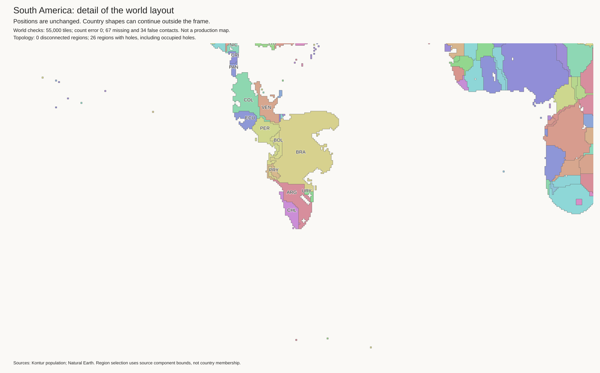
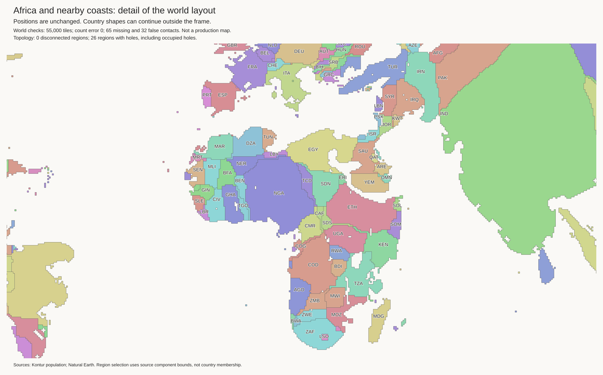

These are research trials, not approved maps. The current best and H3-MON exports are unchanged. Both trials start from the mainland repair trial, not from each other.
| Trial | Missing borders | False borders |
|---|---|---|
| Mainland repair | 69 | 34 |
| Coastal buffer | 67 | 34 |
| Rigid translations | 65 | 32 |
All trials retain 55,000 tiles and exact component budgets. All 481 components remain connected. All 45 lakes retain their 220 empty cells and valid shores. These checks do not prove correct geography.
The three-cell buffer allows inland cells to move away from the coast before a sea edge can be removed. There were 158 swaps. No inland component gains sea edges. No coastal component loses all sea access. But Paraguay still has 16 sea edges. Its narrow shape is not repaired. Do not promote this result on border totals alone.

Five components move by at most 12 cells. Four true borders are restored and two false borders are removed. But Ethiopia gains seven sea edges, from 41 to 48. The inland KAB component gains four sea edges, from zero. This is a regression despite the better border totals.

A larger local fit remains infeasible with a ten-cell margin and an eight-cell reach limit. This is not proof that all fits are infeasible. With the current shapes, a separate search finds that Norway must move at least 14 cells east and seven cells north to touch both Sweden and Finland. That is not a suitable repair of its geographic position.
Fit the Nordic group together. Allow its outside boundary to change. Retain exact tile counts, lake shores, and true borders. For Paraguay, preserve connected coastal cover during fragment repair. Do not wait until the final layout to enforce its inland position.